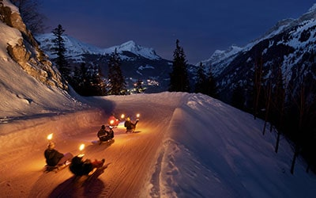
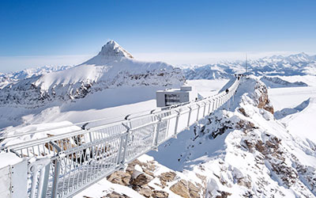
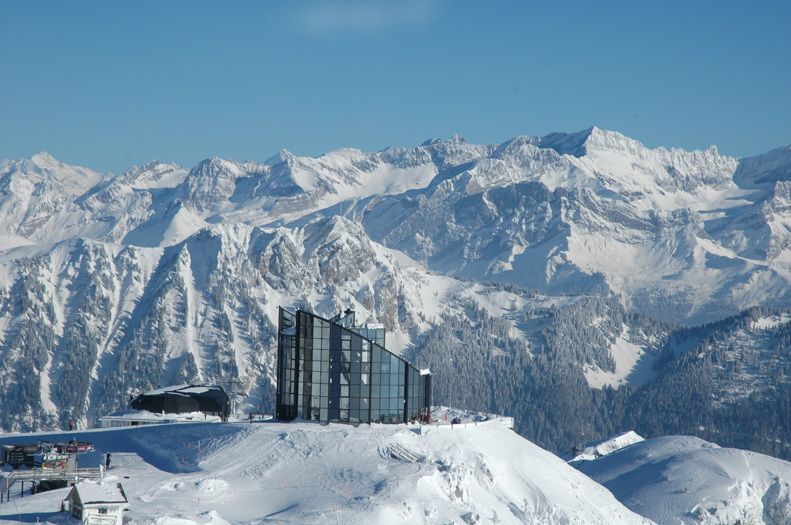
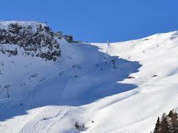
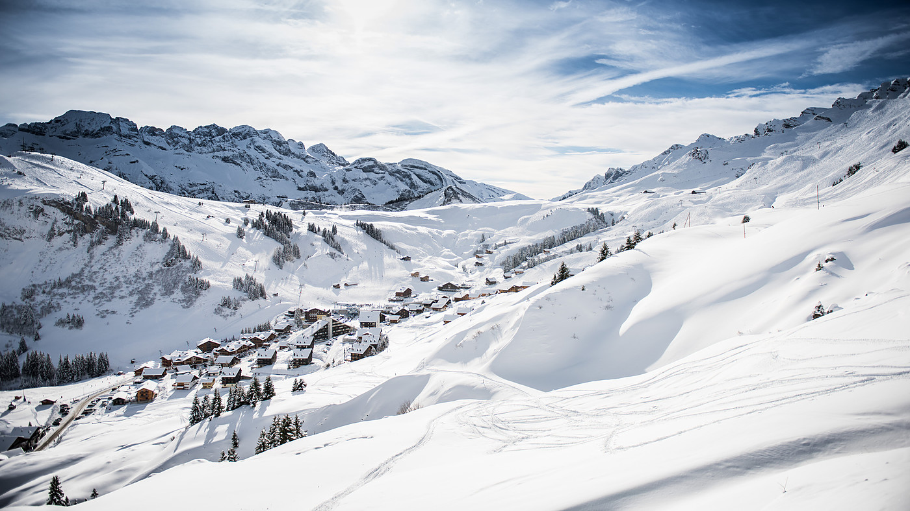
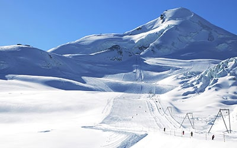
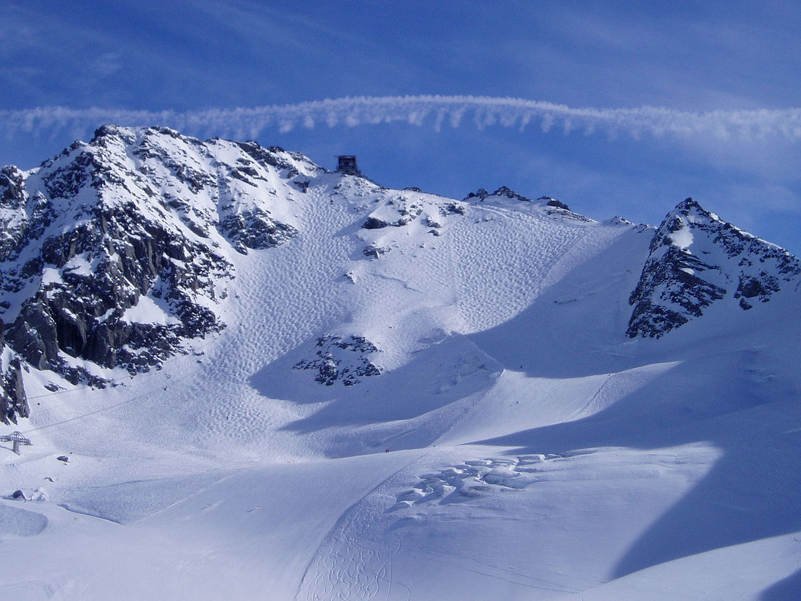
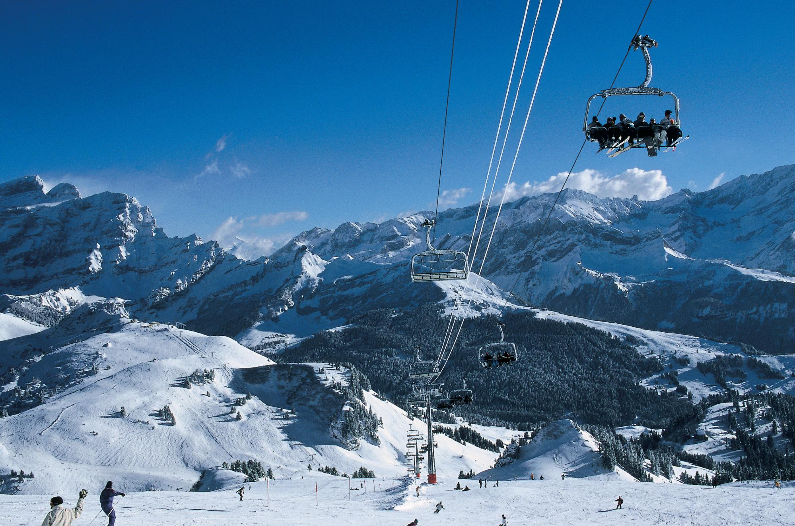
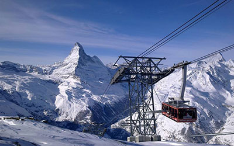

Stations
Cliquez sur l'image de la station voulue pour être redirigé sur le site officiel de la station.
-
Diablerets
Les Diablerets est une station de ski vaudoise, implantée à 1128 m d'altitude sur la commune d'Ormont-Dessus. Située au pied d’un imposant massif montagneux, entre le lac Léman et la station de Gstaad, elle est voisine d'autres stations comme Villars, Leysin, Les Mosses.
-
Gstaad
Cette destination se compose en fait de 10 villages de chalet situés entre 1000m et 1400m d’altitude. Une destination qui a su rester authentique et alpine malgré un très long passé touristique.
-
Leysin
Située à 1263 m. d'altitude, la station de ski de Leysin bénéficie d’une exposition exceptionnelle. Son domaine skiable, son Tobogganing Park, son restaurant tournant "Le Kuklos" et ses écoles internationales en sont les principales particularités.
-
 Champéry
ChampéryLa station de Champéry est l’une des plus anciennes destinations touristiques de Suisse. Cette station Valaisanne du Bas Chablais attire chaque hiver des milliers de skieurs venus se faire plaisir sur une partie de l’immense domaine des Portes du Soleil.
-
Crans Montana
Posée sur un plateau généreusement ensoleillé, entourée de hauts sommets, Crans Montana est une des plus prestigieuses station de ski de Suisse. La station est onnue pour son superbe domaine skiable mais également pour ses nombreuses possibilités de shopping.
-
Les Crosets
La station des Crosets est particulièrement appréciée pour sa situation au pied des pistes et pour son enneigement exceptionnel. Les Crosets est également une porte d'entrée du domaine franco-suisse des Portes du Soleil.
-
Saas Fee
"Perle des Alpes", c'est ainsi que l'on appelle la station de ski de Saas-Fee, perchée à 1800 mètres d'altitude. 13 «quatre mille» dont le Dom et ses 4545 mètres (la montagne la plus haute de Suisse) veillent sur la station et forment un décor unique.
-
Verbier
Juchée sur un plateau ensoleillé au cœur des montagnes à 1500m d’altitude, la station de Verbier a su mélanger le charme d’un village alpin avec les besoins d’une station de ski moderne et huppée.
-
Villars
Villars/Gryon est niché sur un balcon naturel et ensoleillé offrant au sud une vue imprenable sur les Dents-du-Midi. Sa facilité d'accès est unique. Villars/Gryon offre un très large éventail d'activités sportives et d'excursions pour familles, skieurs ou non.
-
Zermatt
Zermatt se niche au pied du Cervin, la montagne la plus photographiée au monde. Près d'un tiers des sommets alpins de plus de 4000 mètres encadrent majestueusement la station de ski de Zermatt qui est devenu, de ce fait, le paradis des alpinistes les plus chevronnés.